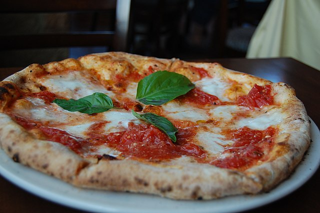

Pizza Margherita
While the name Pizza Margherita may have been popularized because of the Queen's visit, a pizza made with the same toppings was already present in Naples between 1796 and 1810.
In 1830, in the book Napoli, contorni e dintorni, written by Riccio, it was described as a pizza with tomato, mozzarella and basil.
Ingredients
- 3 ½ cups all-purpose flour
- 1 teaspoon salt
- 1 cup water
- 1 (.25 ounce) package active dry yeast
- 1 pinch white sugar
Steps
- Stir flour and 1 teaspoon salt in a bowl. Set aside.
- Mix water, yeast, and sugar in a large bowl. Let stand until yeast begins to form a creamy foam, about 5 minutes.
- Stir half the flour mixture into yeast mixture until no dry spots remain. Stir in remaining flour, 1/2 cup at a time, mixing well after each addition.
- Lightly oil a large bowl, then place dough in the bowl and turn to coat with oil.